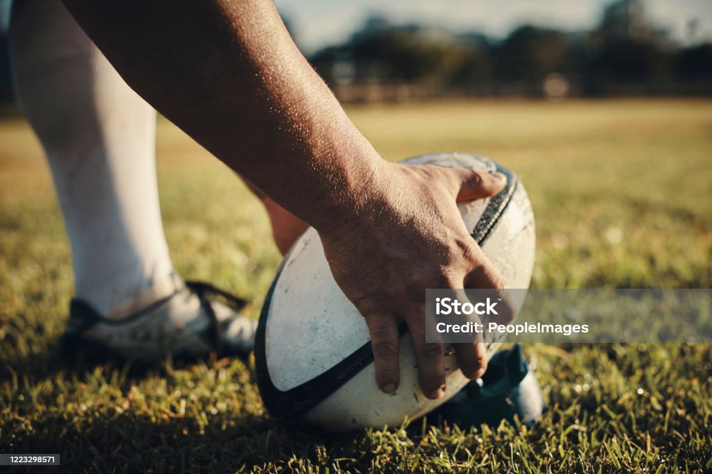

Rugby world cup 2023
The Rugby World Cup is a men's rugby union tournament contested every four years between the top international teams, the winners of which are recognised as the World champions of the sport.
The tournament is administered by World Rugby, the sport's international governing body. The winners are awarded the Webb Ellis Cup, named after William Webb Ellis who, according to a popular legend, invented rugby by picking up the ball during a football game and running with it[1].
The tournament was first held in 1987 and was co-hosted by New Zealand and Australia. Four countries have won the trophy; South Africa four times, New Zealand three times, Australia twice, and England once. South Africa is the current champion, having defeated New Zealand in the final of the 2023 tournament.

The Rugby World Cup is a men's rugby union tournament contested every four years between the top international teams, the winners of which are recognised as the World champions of the sport.
The tournament is administered by World Rugby, the sport's international governing body. The winners are awarded the Webb Ellis Cup, named after William Webb Ellis who, according to a popular legend, invented rugby by picking up the ball during a football game and running with it[1].
The tournament was first held in 1987 and was co-hosted by New Zealand and Australia. Four countries have won the trophy; South Africa four times, New Zealand three times, Australia twice, and England once. South Africa is the current champion, having defeated New Zealand in the final of the 2023 tournament.
The Rugby World Cup is a men's rugby union tournament contested every four years between the top international teams, the winners of which are recognised as the World champions of the sport.
The tournament is administered by World Rugby, the sport's international governing body. The winners are awarded the Webb Ellis Cup, named after William Webb Ellis who, according to a popular legend, invented rugby by picking up the ball during a football game and running with it[1].
The tournament was first held in 1987 and was co-hosted by New Zealand and Australia. Four countries have won the trophy; South Africa four times, New Zealand three times, Australia twice, and England once. South Africa is the current champion, having defeated New Zealand in the final of the 2023 tournament.
| Countries |
WOrld cup |
Runners up |
third |
| Newzeland |
5 |
5 |
4 |
| Italy |
2 |
0 |
0 |
| Urugua |
0 |
0 |
0 |